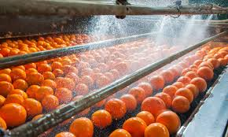

Noida’s rapid industrial development, expanding IT parks, and growing residential infrastructure have placed significant pressure on local water resources. Increasing discharge from industries, STPs, and construction activities has made real-time water quality monitoring essential for protecting groundwater, rivers, and municipal water supplies in Noida.

Conventional laboratory-based water testing is often slow and insufficient for regulatory compliance in Noida. To meet the requirements of CPCB and UPPCB, industries and municipal bodies are adopting Online Water Quality Monitoring Systems (EQMS) integrated with IoT and automation for continuous monitoring, accurate data logging, and real-time compliance reporting.
HUMAN ACTIVITIES AND WATER POLLUTION IN NOIDA
In Noida, untreated or partially treated industrial effluents and sewage from STPs contribute to contamination of surface water and groundwater. Pollutants such as heavy metals, organic waste, chemicals, and suspended solids significantly degrade water quality and pose risks to public health and the environment.

Industrial operations, construction runoff, and urban drainage in Noida and Greater Noida increase levels of COD, BOD, TSS, ammonia, and other contaminants in water bodies. Without continuous monitoring, these pollutants can exceed permissible limits, leading to regulatory non-compliance and environmental damage.
Agua Instruments offers CPCB and UPPCB compliant water quality monitoring systems in Noida for industries, STPs, ETPs, and municipal applications. Our EQMS solutions provide real-time monitoring, OCEMS-ready data transmission, and actionable insights to help organizations ensure compliance, reduce pollution, and safeguard Noida’s water resources.
With increasing industrial activity and urban expansion, Noida requires continuous and reliable water quality monitoring to maintain environmental standards. EQMS solutions enable real-time tracking of key water parameters, helping industries and authorities quickly detect pollution events and take corrective action.
By implementing CPCB and UPPCB compliant EQMS systems, industries and municipal bodies in Noida can achieve continuous compliance, improve transparency, prevent environmental violations, and support sustainable water management. Real-time water quality monitoring is critical for protecting public health and ensuring long-term water security in Noida and Greater Noida.
Why Choose Agua Instruments for Water Quality Monitoring in Noida
CPCB & UPPCB Compliant Systems
Our water quality monitoring systems in Noida are fully compliant with CPCB and UPPCB guidelines, ensuring smooth regulatory approvals and reporting.
Advanced Online Water Analyzers
High-accuracy online analyzers for COD, BOD, TSS, TOC, pH, DO, conductivity, ammonia, nitrate, and chlorine for continuous monitoring.
24x7 Real-Time Monitoring
Continuous real-time water quality monitoring with automated alerts and reports to support fast decision-making in Noida industries.
IoT & Cloud-Based Platforms
IoT-enabled and cloud-based monitoring systems allow remote access, data visualization, trend analysis, and secure data storage.
Complete Project & AMC Support
End-to-end services including installation, commissioning, calibration, training, and AMC support across Noida.

Real-time water quality monitoring systems for Noida municipal water treatment plants to ensure safe drinking water by monitoring pH, turbidity, chlorine, and microbial parameters.

Online wastewater monitoring solutions for industries in Noida to meet CPCB and UPPCB compliance through continuous effluent quality measurement.

Continuous monitoring of rivers, lakes, and surface water bodies in Noida to track pollution levels, dissolved oxygen, BOD, COD, and chemical contaminants.

Smart water quality monitoring solutions for agriculture in Noida and Greater Noida to improve irrigation efficiency and reduce nutrient runoff.

Online monitoring of pH, temperature, ammonia, and dissolved oxygen to support aquaculture and fish farming operations in Noida.

High-precision water quality monitoring instruments for Noida-based research institutions studying water pollution and environmental sustainability.

Water quality monitoring systems for food and beverage industries in Noida to ensure compliance with food safety and hygiene standards.

Continuous monitoring of chlorine, pH, and microbial parameters to maintain safe swimming pool and recreational water quality in Noida.

Practical water quality monitoring systems for Noida schools, colleges, and universities to support environmental science and sustainability education.
| Ammonium | NH4 | 0.1 ...1000 mg/L & 0 ... 10 ppm |
| Nitrates | NO₃⁻ | 0.1 ... 20 mg/L |
| Nitrites | NO₂⁻ | 0.01 ...1000 mg/L |
| Total Nitrogen | TN | 0.1 ...1000 mg/L |
| Phosphates | PO4 | 3- 0.01 ... 20 mg/L |
| Total Phosphorus | TP | 0.01 ... 20 mg/L |
| Chemical Oxygen Demand Equivalent | CODeq | 1 ...10000 mg/L |
| COD Dichloromate | CODeq- | 1 ...10000 mg/L |
| Biochemical Oxygen Demand Equivalent | BODeq- | 1 ...10000 mg/L |
| Total Organic Carbon | TOC | 1 ...10000 mg/L |
| TOC High Temperature | TOC-HT | 0-50,000 mgL |
| Sulphides | S2- | 0.1 ...1000 mg/L |
| Sulphites | SO32- | 0.1 ...1000 mg/L |
| Total Solids | TS | 0.1 ...1000 mg/L |
| Total Suspended Solids | TSS | 0.1 ...1000 mg/L |
| Turbidity | TURB | 0.001 ... 10000 NTU |
| Color | COL | 0.01... 2000 Pt-Co |
| Chlorine | Cl2 | 0.01 ... 20 mg/L |
| Chlorine Dioxide | ClO2 | 0.01 ... 20 mg/L |
| Total Chlorine | TCl | 0.1 ...1000 μg/L |
| Chlorophyll | Chl-a | 0.01 ... 100 mg/L |
| Hydrocarbons | HC | 0.01 ... 100 mg/L |
| Oxygen | O2 | 0.01 ... 100 mg/L |
| Conductivity | EC | 0.001 ... 2000 mS/cm |
| pH | pH+ | 0 ... 14H+ |
| Ozone | O3 | 0.01 ... 10 mg/L |
| Aluminium | Al | 0 ... 1 mg/L |
| Total Ammonia Nitrogen | TAN | 0 .... 100 mg/L |